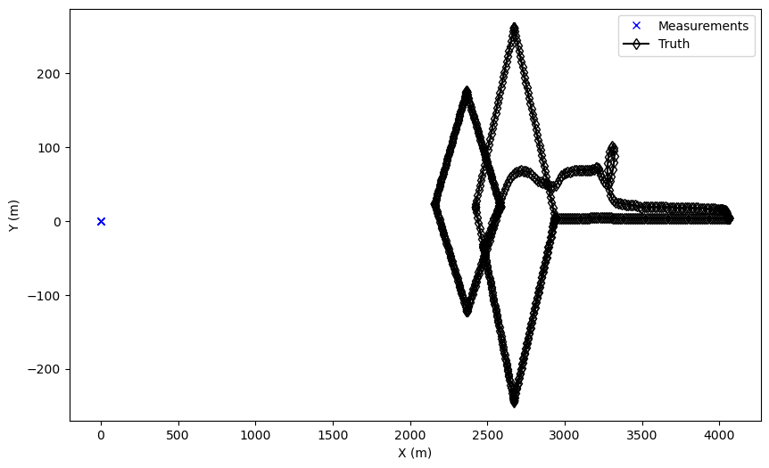
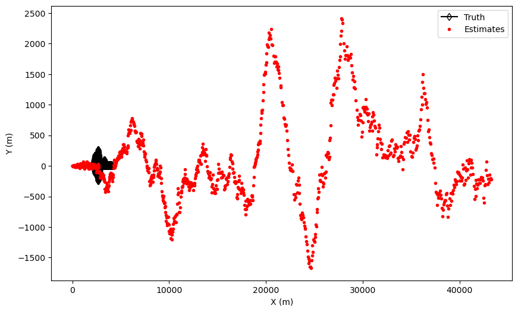

Note
Click here to download the full example code or to run this example in your browser via Binder
UAV Tracking Demonstration
Overview
Starting with GPS data from an instrumented UAV, we will generate range, bearing, and
elevation measurements (from a given radar position). We will use SMART FUSION’s simple
SingleTargetTracker to perform the tracking. At this point we are primarily interested
in the necessary motion models that may be needed so the example is fairly simple, but
we want to be able to easily expand the simulation to handle more complex scenarios.
Items to note:
Assumes a single target track, which simplifies track management.
There is no clutter, and no missed detections. So 1:1 Data Association.
Need an initiator and deleter for the tracker.
GPS updates are 1 sec., we assume radar revisit is the same (little unrealistic)
We are assuming a ground based radar:
Radar has course elevation resolution and fine bearing resolution.
Use range standard deviation of 3.14 m as a replacement for range resolution.
Setup: transition model, measurement model, updater and predictor
import numpy as np
from smartfusion.models.transition.linear import (
ConstantVelocity,
CombinedLinearGaussianTransitionModel
)
from smartfusion.predictor.kalman import ExtendedKalmanPredictor
from smartfusion.updater.kalman import ExtendedKalmanUpdater
from smartfusion.models.measurement.nonlinear import (
CartesianToElevationBearingRange
)
from smartfusion.types.array import CovarianceMatrix
transition_model = CombinedLinearGaussianTransitionModel(
[ConstantVelocity(1.0),
ConstantVelocity(1.0),
ConstantVelocity(1.0)])
# Model coords = elev, bearing, range. Angles in radians
meas_covar = np.diag([np.radians(np.sqrt(10.0))**2,
np.radians(0.6)**2,
3.14**2])
meas_covar_trk = CovarianceMatrix(1.0*meas_covar)
meas_model = CartesianToElevationBearingRange(
ndim_state=6,
mapping=np.array([0, 2, 4]),
noise_covar=meas_covar_trk)
predictor = ExtendedKalmanPredictor(transition_model)
updater = ExtendedKalmanUpdater(measurement_model=meas_model)
Setup CSV reader & feeder
Setup the reader and feeder to read the GPS data in
CSV file.
This part uses 2 SMART FUSION detector type of classes:
CSVGroundTruthReader- reads our CSV file which contains: timestamp, latitude, longitude, altitude and other miscellaneous data.LLAtoENUConverter- this is a feeder, but it converts our lat, long, alt data into Cartesian (ENU).
The Cartesian(ENU) data will be converted to Range, Bearing, Altitude later on. A more involved detector could:
Add clutter.
Handle \(P_d\) behaviour. It could be based on radial velocity or other parameters.
Handle radar revisit times.
Add unknown number & multiple targets.
from smartfusion.reader.generic import CSVGroundTruthReader
ground_truth_reader = CSVGroundTruthReader(
path='UAV_Rot.csv',
state_vector_fields=['longitude', 'Vx m/s', 'latitude', 'Vy m/s', 'altitude (m)'],
time_field='time',
path_id_field='groupNb',
)
from smartfusion.feeder.geo import LLAtoENUConverter
sensor_location = [-30.948, 50.297311666, 0] # Radar position [long, lat, alt]
ground_truth_reader = LLAtoENUConverter(ground_truth_reader, sensor_location, [0, 2, 4])
Define Sensor, Platform and Detector
The sensor converts the Cartesian coordinates into range, bearing and elevation. The sensor is then mounted onto a platform (stationary in this case)
from smartfusion.platform.base import FixedPlatform
from smartfusion.sensor.radar.radar import RadarElevationBearingRange
from smartfusion.simulator.platform import PlatformDetectionSimulator
from smartfusion.types.state import State
sensor = RadarElevationBearingRange(
position_mapping=[0, 2, 4],
noise_covar=meas_covar,
ndim_state=6,
)
platform = FixedPlatform(
State([0, 0, 0, 0, 0, 0]), # Sensor at reference point, zero velocity
position_mapping=[0, 2, 4],
sensors=[sensor]
)
# Create the detector and initialize it.
detector = PlatformDetectionSimulator(ground_truth_reader, [platform])
Setup Initiator class for the Tracker
This is just an heuristic initiation: Assume most of the deviation is caused by the Bearing measurement error. This is then converted into x, y components using the target bearing. For the deviation in z, we simply use \(R\times\sigma_{elev}\) (ignore any bearing and range deviation components). Velocity covariances are simply based on the expected velocity range of the targets.
NOTE - The Extended Kalman filter can be very sensitive to the state
initiation. Using the default SimpleMeasurementInitiator, the estimates
tended to diverge over the course of the track when larger bearing measurement
covariances were used.
from smartfusion.types.state import GaussianState, State
from smartfusion.types.update import GaussianStateUpdate
from smartfusion.initiator.simple import SimpleMeasurementInitiator
from smartfusion.types.track import Track
from smartfusion.types.hypothesis import SingleHypothesis
class Initiator(SimpleMeasurementInitiator):
def initiate(self, detections, timestamp, **kwargs):
MAX_DEV = 400.
tracks = set()
measurement_model = self.measurement_model
for detection in detections:
state_vector = measurement_model.inverse_function(
detection)
model_covar = measurement_model.covar()
el_az_range = np.sqrt(np.diag(model_covar)) #elev, az, range
std_pos = detection.state_vector[2, 0]*el_az_range[1]
stdx = np.abs(std_pos*np.sin(el_az_range[1]))
stdy = np.abs(std_pos*np.cos(el_az_range[1]))
stdz = np.abs(detection.state_vector[2, 0]*el_az_range[0])
if stdx > MAX_DEV:
print('Warning - X Deviation exceeds limit!!')
if stdy > MAX_DEV:
print('Warning - Y Deviation exceeds limit!!')
if stdz > MAX_DEV:
print('Warning - Z Deviation exceeds limit!!')
C0 = np.diag(np.array([stdx, 30.0, stdy, 30.0, stdz, 30.0])**2)
tracks.add(Track([GaussianStateUpdate(
state_vector,
C0,
SingleHypothesis(None, detection),
timestamp=detection.timestamp)
]))
return tracks
prior_state = GaussianState(
np.array([[0], [0], [0], [0], [0], [0]]),
np.diag([0, 30.0, 0, 30.0, 0, 30.0])**2)
initiator = Initiator(prior_state, meas_model)
#initiator = SimpleMeasurementInitiator(prior_state, meas_model)
Setup Deleter for the Tracker
In the simple case of 1 target, we never want to delete the track. Because this Deleter is so simple we haven’t bothered using a subtype/inheritance and instead make use of Python’s duck typing.
class MyDeleter:
def delete_tracks(self, tracks):
return set()
deleter = MyDeleter()
Setup Hypothesiser and Associator
Since we know there is only one measurement per scan, we can just use the
NearestNeighbour associator to achieve our desired result.
from smartfusion.measures import Euclidean
from smartfusion.dataassociator.neighbour import NearestNeighbour
from smartfusion.hypothesiser.distance import DistanceHypothesiser
from smartfusion.tracker.simple import SingleTargetTracker
meas = Euclidean()
hypothesiser = DistanceHypothesiser(predictor, updater, meas)
associator = NearestNeighbour(hypothesiser)
tracker = SingleTargetTracker(initiator,
deleter,
detector,
associator,
updater)
Run the Tracker
We extract the ground truth from the detector and then run the tracker. While running the tracker we:
Extract the measurement that is associated with it.
Extract the position components of the estimated state vector.
This allows us to plot the measurements, ground truth, and state estimates.
Note: The meas_model.inverse_function() returns a state vector, which for our CV model consists of [x, vx, y, vy, z, vz].
from matplotlib import pyplot as plt
est_X=[]
est_Y=[]
meas_X=[]
meas_Y=[]
true_X = []
true_Y = []
for time, tracks in tracker:
for ground_truth in ground_truth_reader.groundtruth_paths:
true_X.append(ground_truth.state_vector[0])
true_Y.append(ground_truth.state_vector[2])
# Because this is a single target tracker, I know there is only 1 track.
for track in tracks:
#Get the corresponding measurement
detection = track.states[-1].hypothesis.measurement
# Convert measurement into xy
xyz = meas_model.inverse_function(detection)
meas_X.append(xyz[0])
meas_Y.append(xyz[2])
vec = track.states[-1].state_vector
est_X.append(vec[0])
est_Y.append(vec[2])
fig = plt.figure(figsize=(10, 6))
ax1 = fig.add_subplot(1, 1, 1)
plt.plot(meas_X, meas_Y, 'xb', label='Measurements')
ax1.plot(true_X, true_Y, 'd-k', label='Truth', markerfacecolor='None')
ax1.legend()
ax1.set_xlabel('X (m)')
ax1.set_ylabel('Y (m)')
fig = plt.figure(figsize=(10, 6))
ax2 = fig.add_subplot(1, 1, 1)
ax2.plot(true_X, true_Y, 'd-k', label='Truth', markerfacecolor='None')
ax2.plot(est_X, est_Y, 'r.', label='Estimates')
ax2.set_xlabel('X (m)')
ax2.set_ylabel('Y (m)')
ax2.legend()
- 
- 
To Investigate
What happens when:
Increase the bearing standard deviation?
Increase the model process noise?
Move the radar?
Total running time of the script: ( 0 minutes 0.809 seconds)